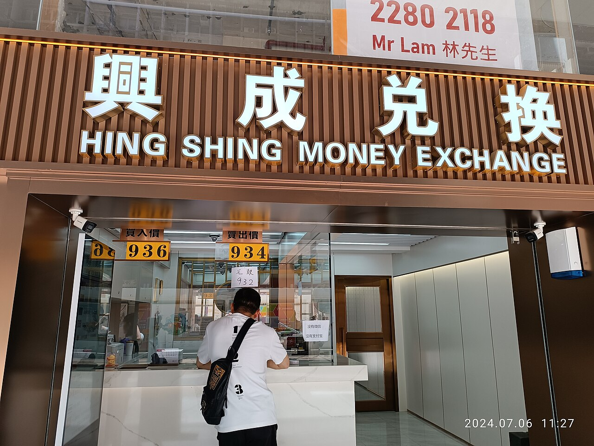
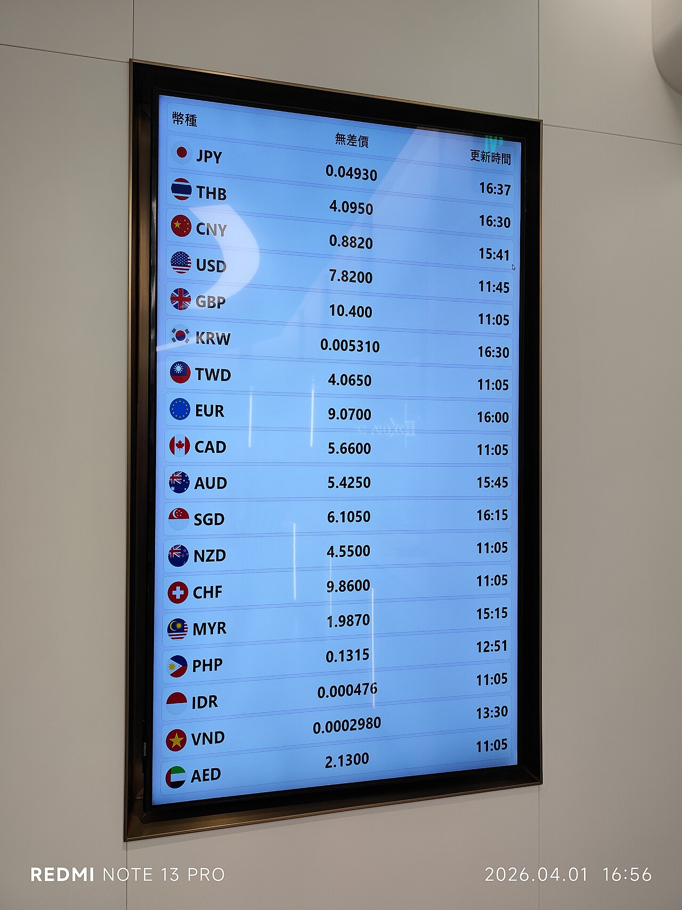
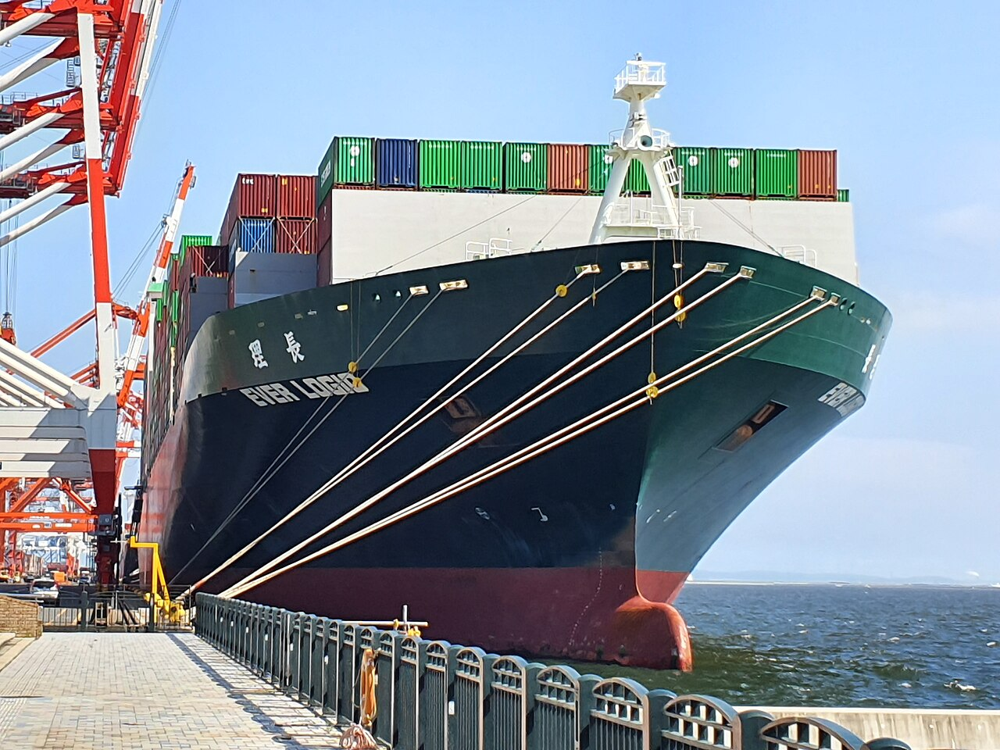
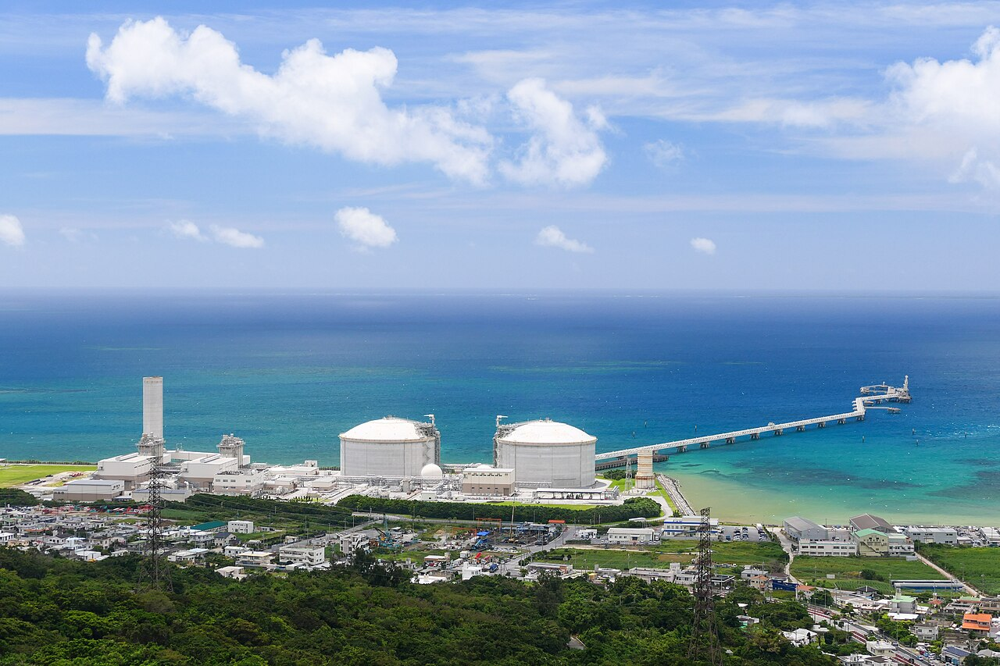
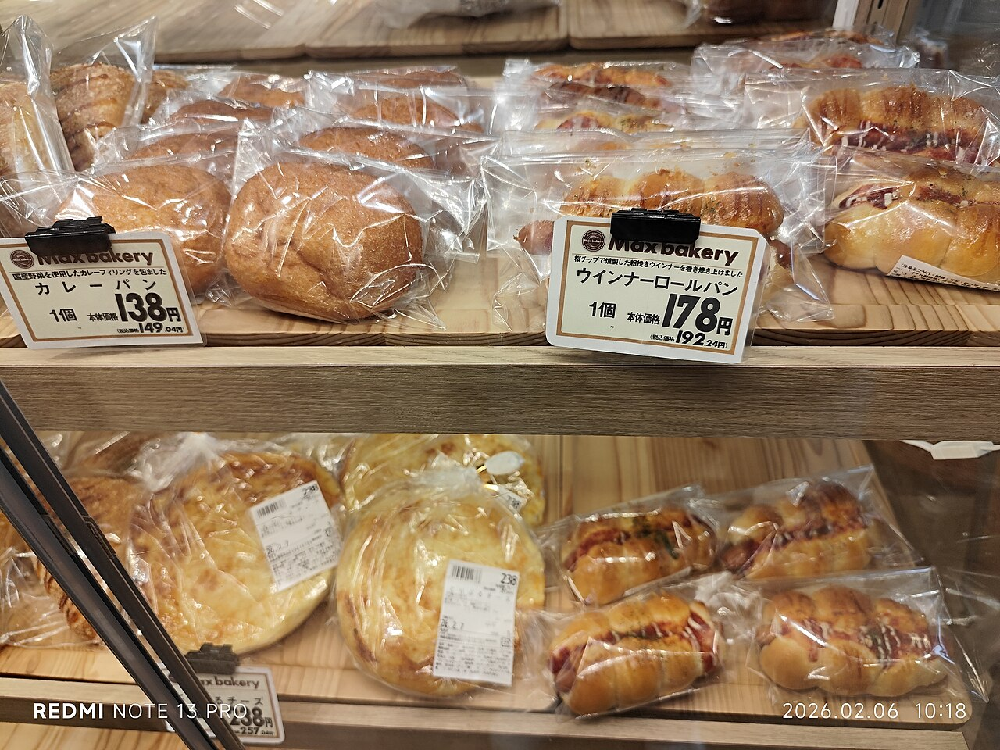
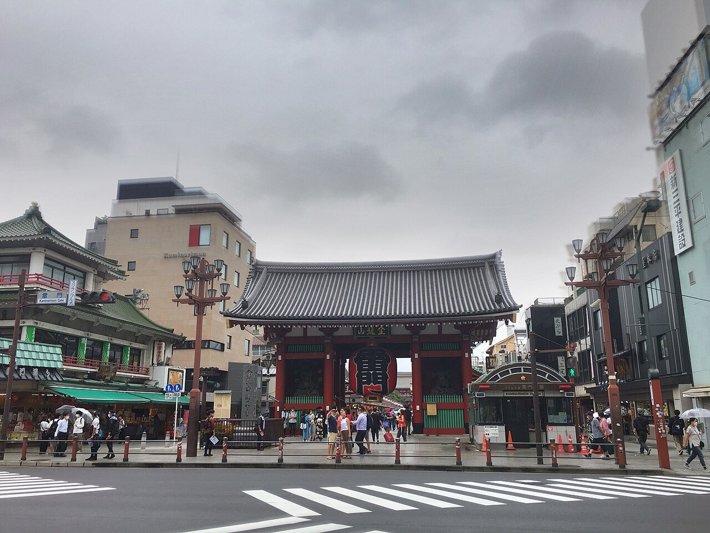
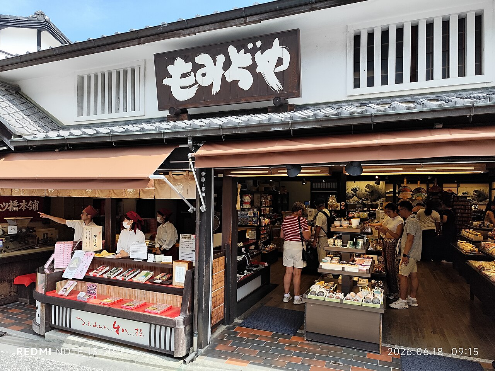
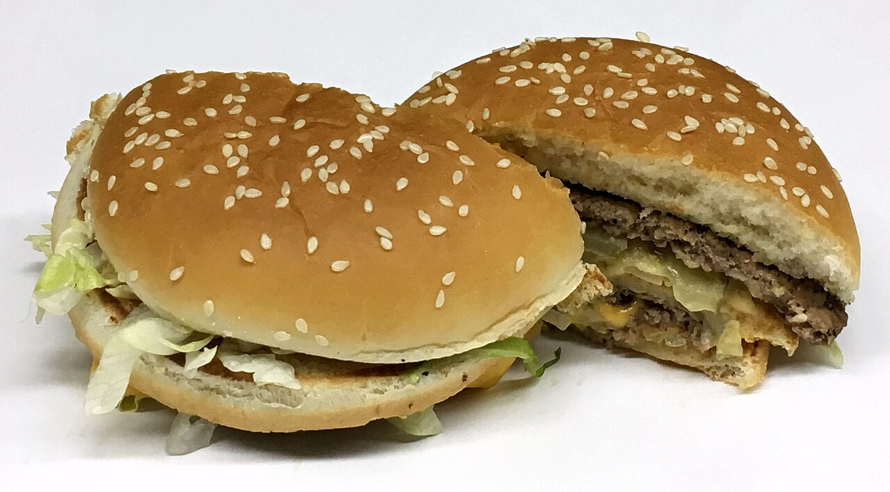

ハワイ・ホノルルの食堂で、10ドルのランチを頼むとします。2012年なら、円にして約800円。2026年11月には約1,590円です。料理は同じなのに、払う円はほぼ2倍になりました。
この特集の2本目では、2022年からの値上がりの大きな理由は、エネルギーや食べ物の値上がりだと書きました。その裏で、もう1つ動いていたものがあります。円の値打ちです。ニュースで聞く「円安」とは何で、円安になると、なぜ日本で物が高くなるのでしょう。

ニュースでよく聞く「円安」。円が「安い」のに、なぜ買い物の値段は高くなるのでしょう。為替の折れ線と流れ図で、海の向こうの値段が財布に届くまでをたどり、最後はハンバーガーで測るお金の強さまで、のぞいてみませんか。
ハワイ・ホノルルの食堂で、10ドルのランチを頼むとします。2012年なら、円にして約800円。2026年11月には約1,590円です。料理は同じなのに、払う円はほぼ2倍になりました。
この特集の2本目では、2022年からの値上がりの大きな理由は、エネルギーや食べ物の値上がりだと書きました。その裏で、もう1つ動いていたものがあります。円の値打ちです。ニュースで聞く「円安」とは何で、円安になると、なぜ日本で物が高くなるのでしょう。
日本は多くの物を輸入にたより、円安だと払う円がふくらむから。
円とドルは、毎日たくさん交換されています。その交換の比率を為替（かわせ）レートといいます。「1ドル＝150円」とは、1ドルを手に入れるのに150円が要る、ということです。
ややこしいのは「安い」「高い」の向きです。1ドル＝100円が150円になると、数字は大きくなるのに「円安」と呼びます。円とドルにも値札がついている、と考えるとわかりやすくなります。
1ドルを1つの品物として見ると、100円で買えたものが150円に値上がりしました。ドルが高くなった分、円の値打ちは下がった。これが円安です。円の側から見ると、1円は1セントから約0.67セントに値下がりしたことになります。
逆に、少ない円で1ドルが買えるようになるのが円高です。

円とドルの比率は、長い目で見ると大きく動いてきました（Fig.02）。1949年から1971年までは1ドル＝360円に決められていました。1971年にドルと金の交換が止まり（ユーロ特集の4本目）、1973年からは、売り買いで毎日動くしくみ（変動相場制）に変わりました。
円がいちばん強かったのは2011〜12年ごろで、1年の平均は約80円。そこから円安が進み、2024年7月には1ドル＝161円台に。2026年も、11月までの平均で約158円です。
では、2012年から円安が進んだのはなぜでしょう。理由はいくつも重なりますが、よく挙げられるのが金利（お金を貸し借りするときの利息の割合。3本目で見た、お金の「値段」）の差です。
アメリカの金利が高く日本が低いと、利息の多いドルで持とうとする人が増え、円が売られやすくなります。日本銀行と金利の話は、この特集の3本目で取り上げています。
円安が値段に響くのは、日本が暮らしに欠かせない物の多くを、外国から買っているからです。石油や天然ガスは、ほとんどが輸入。パンや麺の材料の小麦も、農林水産省によると、使う量の8割以上を外国から買っています。

輸入品の代金は、約7割がドルで値段を決めて払われています（財務省、2026年上半期）。ドルでの値段が同じでも、1ドル＝100円が150円になれば、輸入する会社が用意する円は1.5倍。その分が、少しずつ値札に上乗せされていきます（Fig.03）。
時間がかかる例が小麦です。国が輸入した小麦を製粉会社に売る値段は、年に2回、4月と10月に見直されます。もとにするのは直前の半年の買いつけ値段なので、円安の影響は数か月おくれて、小麦粉やパンに届きます。


円安は、困ることばかりではありません。外国に物を売る会社には追い風です。たとえば3万ドルで売れる車は、1ドル＝100円なら300万円、150円なら450万円の売り上げになります。
外国からの旅行者にも、日本の買い物や食事は割安に見えます。日本政府観光局によると、2025年に日本を訪れた外国人は約4,270万人で、過去最多でした。円安も追い風の1つといわれます。


反対に、外国から物を買う側には向かい風です。燃料や原料を輸入する会社は費用がふくらみ、家計は値上がりした品を買うことになります。海外旅行に出かける人も、冒頭のランチのように、同じ10ドルにより多くの円を払います。
1本目で、お札は「次の人も受け取ってくれる」という信用で使える紙だと見ました。国の外では、その信用が毎日値段になっています。世界の人がどれだけ円を持ちたいと思うかで、円の値打ちは上がったり下がったりするのです。
円の値打ちは、国の中の物価だけでなく、外国のお金とのくらべっこでも決まります。円安の値上がりとは、そのくらべっこの結果が、輸入品を通って私たちの財布に届いたものなのです。
日本のエネルギー自給率（国内でまかなえる割合。2024年度）。エネルギーの8割以上は外国から資源エネルギー庁による
日本の食料自給率（カロリーで見た国内産の割合。2025年度、概算値）農林水産省による
2025年に、外国からの旅行者が日本で使ったお金（過去最多）。旅行者1人あたり約22万円（編集部の計算）観光庁による

イギリスの経済誌エコノミストは1986年から、ビッグマックの値段で各国のお金をくらべる「ビッグマック指数」を発表しています。同じハンバーガーなら、どの国でも同じくらいの値打ちのはず、という遊び心の物差しです。
2026年7月の発表では、日本のビッグマックは500円、アメリカは6.22ドル。500円と6.22ドルを同じ値打ちとみなすと、1ドル＝約80円。円がいちばん強かった2011年ごろとほぼ同じ数字です。
ところが実際のレートは約162円。ドルに直すと日本の1個は3.08ドルで、調べた54の国・地域のうち、安いほうから7番目でした。
15年前の2011年7月は逆で、日本の320円は4.08ドル。アメリカの3.64ドルより高かったのです。家賃や給料の違いも値段に入るので、ぴったり当たる物差しではありません。それでも、円の値打ちの変わりようは、ハンバーガー1個にくっきり表れています。
次にハンバーガーを買ったら、その値段をドルに直してみてください。円の値打ちが、手のひらの上で測れます。